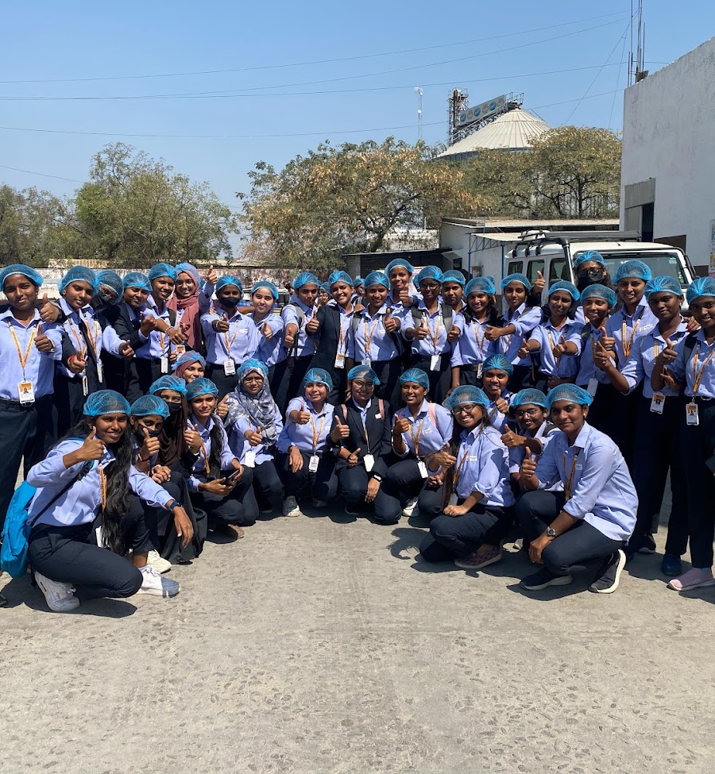

About Our College
Pragnya Degree College is an educational institution located in Chandanagar, Hyderabad, Telangana. The college focuses on providing quality education, developing students' skills, and preparing them for future career opportunities.



History of Pragnya Degree College
Pragnya Degree College is an educational institution located in Hyderabad, Telangana. The college aims to provide students with quality higher education and opportunities for academic growth. It focuses on developing knowledge, practical skills, communication, and overall student development. Through academic activities and skill-based learning, the institution encourages students to prepare for their future careers.